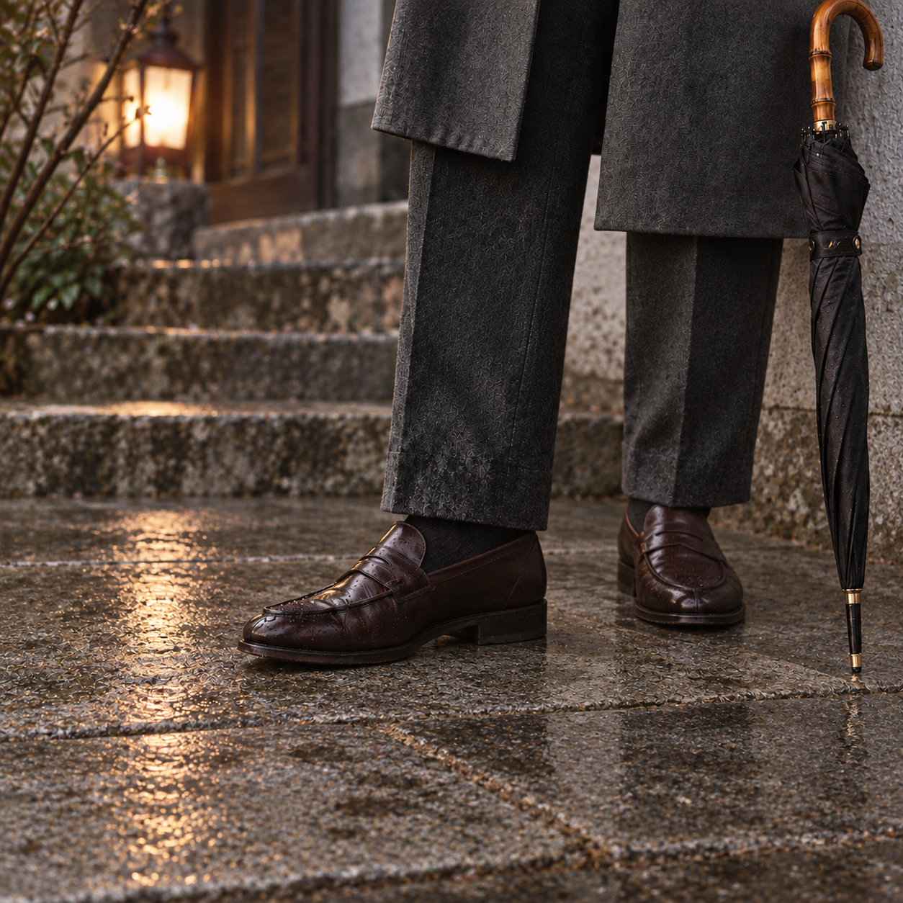

002 RL Purple / S6
18:00 · MATERIAL DETAIL
After Shower
소나기 뒤 현관의 신발과 바짓단. 작은 장면이지만 접지·원단·돌의 물성을 동시에 검증합니다.

| 반복 수정 | 결과 |
|---|---|
| v3 | 필름 테두리에 KODAK PORTRA 400 문자가 생성되어 탈락 |
| v4 | 테두리는 제거됐지만 다리 위치와 접지가 불안정 |
| v5 | 두 발을 같은 평면에 놓았으나 원단·돌 표면의 반복 텍스처와 반사가 남음 |
다음 방식 · 이전 이미지를 편집하지 않고 새로 생성합니다. 무늬 없는 회색 플란넬, 같은 높이의 두 발, 큰 무광 화강석 판재, 전등 주변의 희미한 국소 반사만 허용합니다.